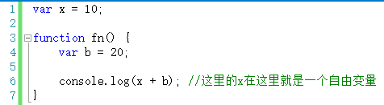
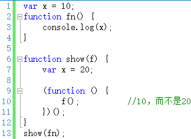
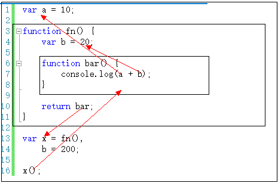

从【自由变量】到【作用域链】
先解释一下什么是“自由变量”。
在A作用域中使用的变量x，却没有在A作用域中声明（即在其他作用域中声明的），对于A作用域来说，x就是一个自由变量。如下图

如上程序中，在调用fn()函数时，函数体中第6行。取b的值就直接可以在fn作用域中取，因为b就是在这里定义的。而取x的值时，就需要到另一个作用域中取。到哪个作用域中取呢？
有人说过要到父作用域中取，其实有时候这种解释会产生歧义。例如：

所以，不要在用以上说法了。相比而言，用这句话描述会更加贴切——要到创建这个函数的那个作用域中取值——是“创建”，而不是“调用”，切记切记——其实这就是所谓的“静态作用域”。
对于本文第一段代码，在fn函数中，取自由变量x的值时，要到哪个作用域中取？——要到创建fn函数的那个作用域中取——无论fn函数将在哪里调用。
上面描述的只是跨一步作用域去寻找。
如果跨了一步，还没找到呢？——接着跨！——一直跨到全局作用域为止。要是在全局作用域中都没有找到，那就是真的没有了。
这个一步一步“跨”的路线，我们称之为——作用域链。
我们拿文字总结一下取自由变量时的这个“作用域链”过程：（假设a是自由量）
第一步，现在当前作用域查找a，如果有则获取并结束。如果没有则继续；
第二步，如果当前作用域是全局作用域，则证明a未定义，结束；否则继续；
第三步，（不是全局作用域，那就是函数作用域）将创建该函数的作用域作为当前作用域；
第四步，跳转到第一步。

以上代码中：第13行，fn()返回的是bar函数，赋值给x。执行x()，即执行bar函数代码。取b的值时，直接在fn作用域取出。取a的值时，试图在fn作用域取，但是取不到，只能转向创建fn的那个作用域中去查找，结果找到了。
这一节看似很轻松的把作用域链引出来，并讲完了。之所有轻松是有前几节的基础，否则将很难解释。
接下来咱们开始正式说说一直期待依旧的朋友——闭包。敬请期待下一节。